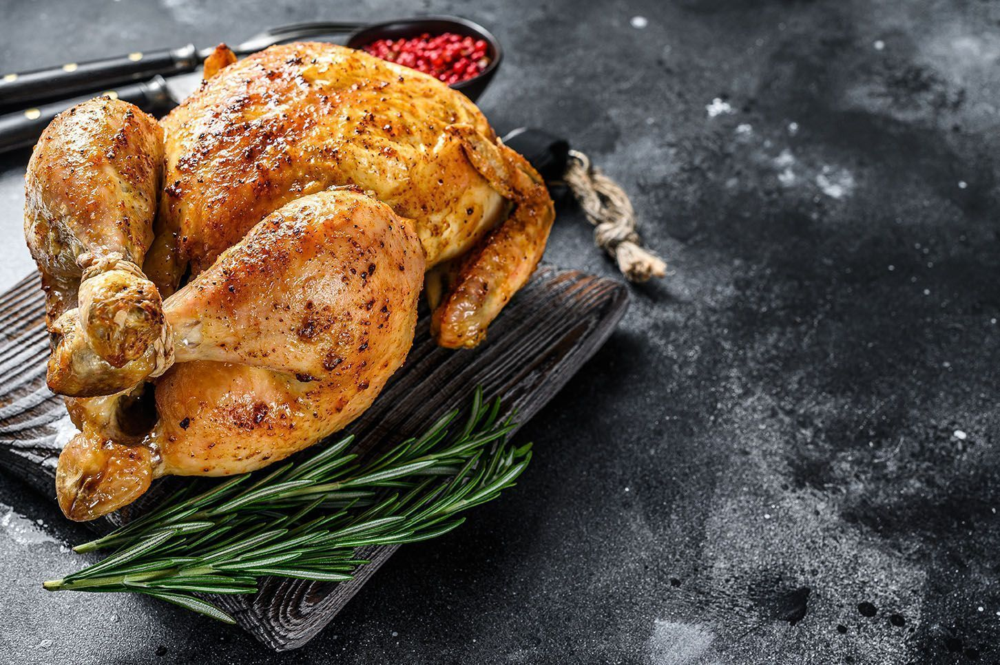
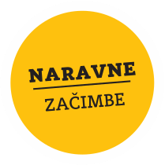
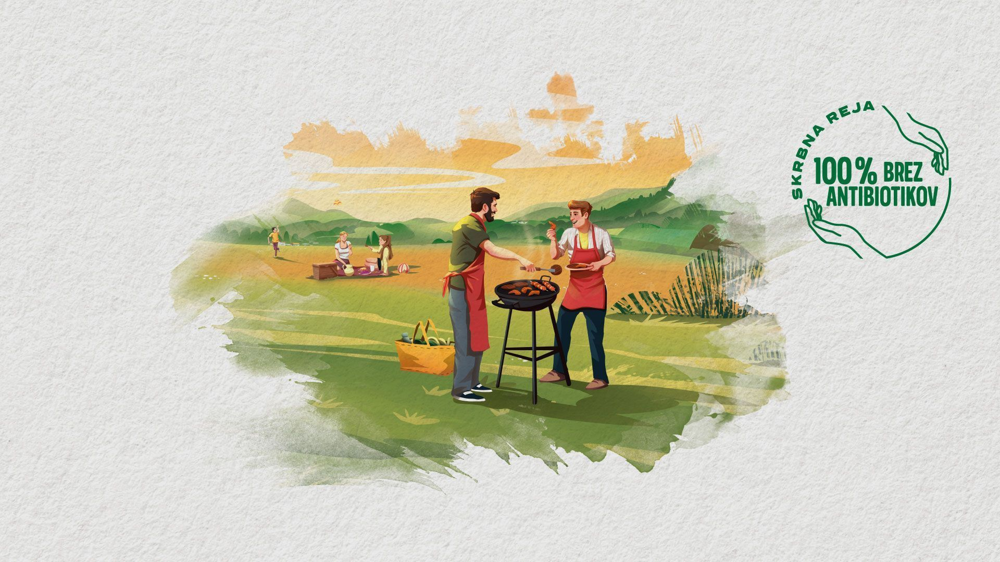
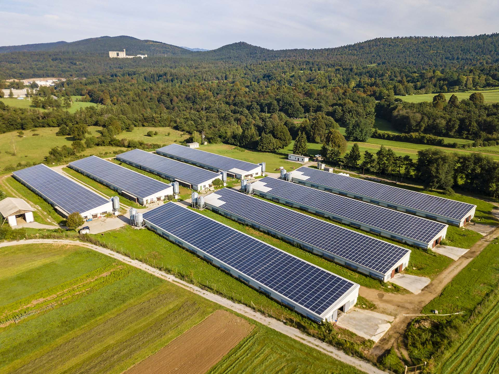
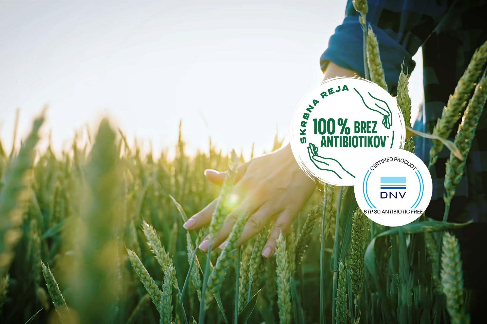
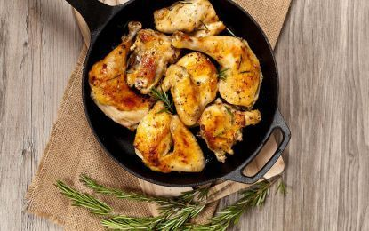
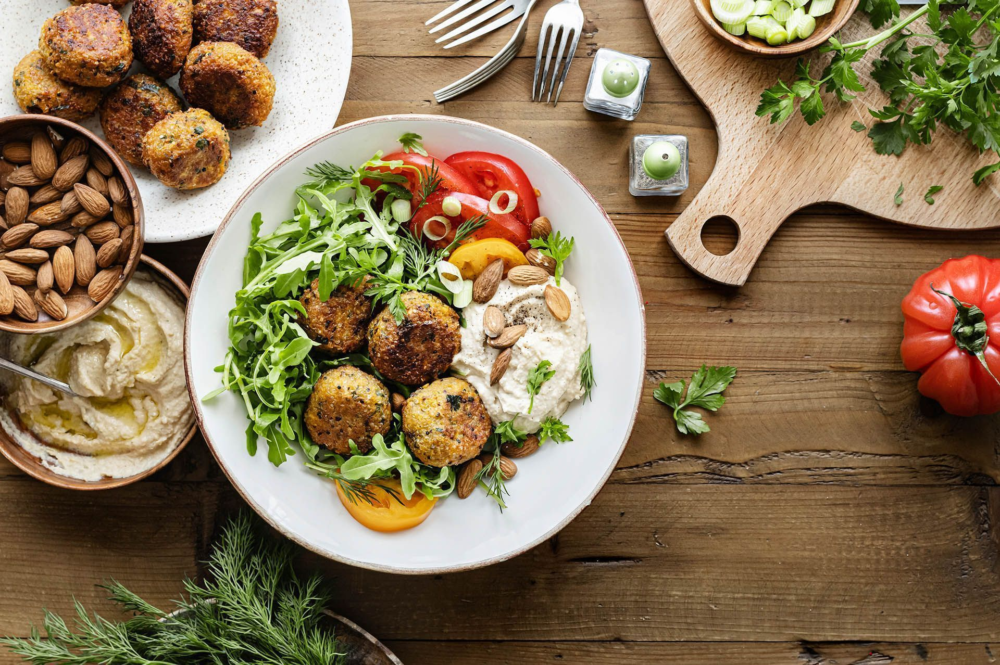
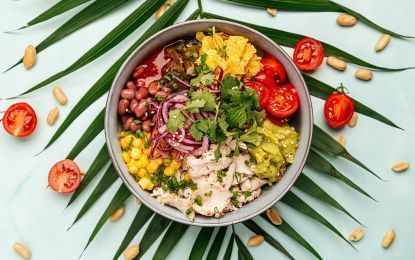

Preverjeno
slovensko
poreklo
Vsak kos mesa je sledljiv — od domače reje do police v trgovini.
Od krmnega zrna do vašega krožnika — sveže piščančje meso preverjenega slovenskega porekla.
Hiter življenjski tempo ne pomeni, da moramo popuščati pri kakovosti. Ravno obratno! Pivka zato usmerja vso svojo pozornost v zagotavljanje najvišjih standardov sledljivosti, varnosti in kakovosti mesa. Skrbno nadzira vse, od krmnega zrna in rejnih pogojev do zavidljivih standardov predelave, kar dokazujejo tudi številni certifikati.
Preveri Pivkino kakovost→Vsak kos mesa je sledljiv — od domače reje do police v trgovini.
Krmno zrno pridelamo in pripravimo sami — zato vemo, kaj je na vašem krožniku.
Zavidljivi standardi predelave, ki jih potrjujejo številni certifikati.

Preveri Pivkino kakovost→

Sveže meso
Kakovostno meso ni le boljšega okusa, temveč vsebuje tudi vsa hranila, ki jih potrebujemo za zdravo in aktivno življenje. Piščančje dobrote Pivka so odličen vir antioksidantov in omega 3 maščobnih kislin. Hrustljavo zapečena skorjica piščanca tako ne bo vabila le s svojim vonjem in okusom, temveč tudi s sočnim naborom hranil, ki se skrivajo pod njo.
Nasvet Izberimo pravi kos mesa →


Iščem idejo za hiter in zdrav obrok ↓


